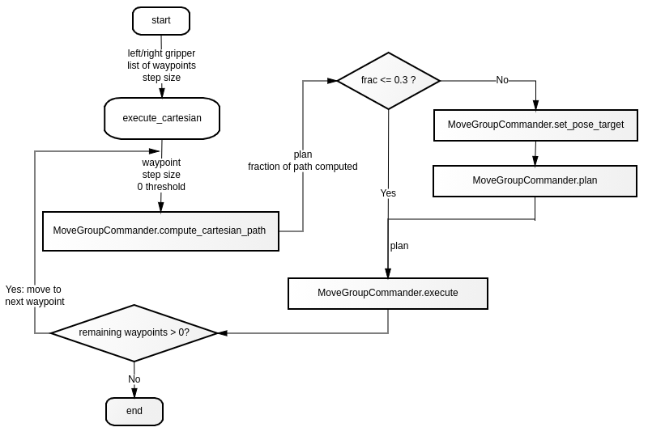

Skills:
Members:
Time:
Baxter, ROS, MoveIt!, Apriltag
Dimitrios Chamzas, Dongho Kang, Gabbie Wink
November, 2020
This project is the final project of Embedded Systems in Robotics. Its goal is to control a Baxter robot to stack a fixed number of cups into a tower. The tower is built on a table that is placed in front of Baxter. The source code includes several different nodes to operate Baxter with or without computer vision and to build a ower out of 3, 6, and 10 cups. More detailed descriptions for each nodes can be found on the project's GitHub page.
To minimize challenges from vision detection and precise manipulation, this project is separated into two tasks. The image below shows how a table is divided into the working area and sorted area.
Starting with random cups placed in the working area, task 1 needs to grab and place them at each side of the table in order.

Then, task2 needs to grab the sorted cups and place them back in the middle of the table to stack them into a tower. To avoid collision between the two arms, these two tasks are executed alternatively. Once one arm completes placing a cup, it should move away from the middle of the table and leave workspace for the other arm.

The code for building a tower can be grouped into three main portions: simulation, computer vision, robot manipulation. My role in the team is to design and construct Baxter's motion to grab and place cups.
Simulation of the project is completed in Gazebo. Before executing code on the real robot, running nodes in simulation allows the team to run different test cases and visulize results. Cups inside the simulator are presented as cylinders. Their positions are also pre-defined to allow quick restart and switching between scenes (sort or stack).
When controlling the robot, Baxter's MoveIt scene is shown in rviz. At start of simulation, cups will also be added to the scene as obstacles so that MoveIt will recognize the cups and execute proper collision detection. The image on the left below shows Baxter simulator grabbing and placing cups into a tower; the image on the right belows shows the simulator finishing the tasks. The cup size in rviz is smaller than in Gazebo, specifically, it is smaller than the distance between gripper's paddles when closed. This is to ensure that rviz does not think Baxter is colliding with a cup while grabbing.
This project uses ROS AprilTag to detect position of cups in the real environment. The cameras that used for object detection are the ones on Baxter's both arms. Each cup has an AprilTag attached to itself to indicate an unique number. The main camera to use in this project is the right arm camera. It needs to point downward to the table in order to properly detect the tags. As shown in the image below, once a tag is recognized, rviz will add a cylinder obstacle in rviz at the tag's position in the environment.
My main job in this project is to control both arms of Baxter to let them grab and place cups from one to another specified location. The locations are either pre-defined or provided by Apriltags depending on whether the node uses computer vision. The image below exhibits the logic of the robot's behaviors.
The image on the left below shows Baxter grabbing a sorted cup. The image on the right below shows Baxter placing the cup into the workstation. The movement of Baxter arm is controlled using ROS MoveIt package for Baxter. The gripper is controlled using Baxter ROS interface.
The team mainly uses cartesian planning methods provided by MoveIt to control behavior of the arms and add a short settlement time in between each move. As shown in the image below, initially, the node will execute pose planning to get a better result if the output of cartesian planning is insufficient to complete a task (if the fraction of a computed path is less than 30%).
However, path planning with pose target sometimes result in unexpected behavior. For instance, Baxter may rotate its arm by a full circle even if the task is to move a cup horizontally from left to right. Also, planners may give a trajectory path too close to MoveIt objects leading to a collision at reality. This problem is fixed by adding larger thresholds at MoveIt. Nonetheless, these thresholds need to be smaller to allow proper collision detection for attaching cup objects inside rviz. Rather than finding the right thresholds for all parameters, the team decides to generate all movements of Baxter only using cartesian planning. The revised code workflow is shown in the image below.